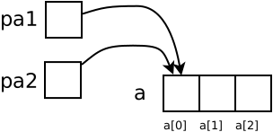
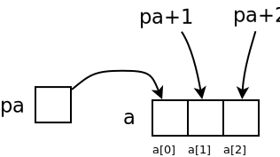
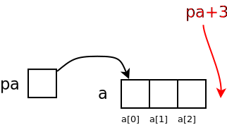
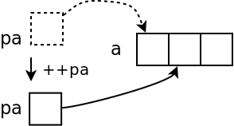
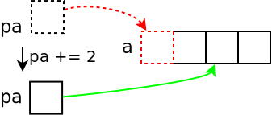
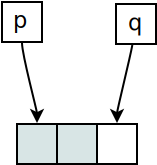
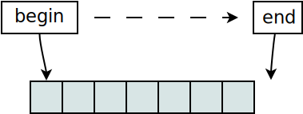
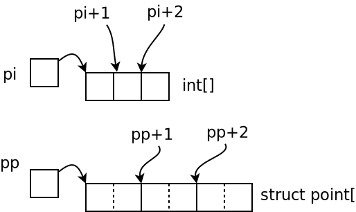

Pointers and Arrays¶
It’s Only Memory¶
Pointers and arrays are closely related to each other
Automatic conversion array ⟶ pointer
Array-type function parameters are in fact pointers to the first (0-th) array element
Index operator (
a[i]) is pointer arithmeticTrue strength of C
int a[] = { 42, 1, 23 };
char str[] = { 'h', 'a', 'l', 'l', 'o', '\0' };
int *pa1 = &a[0];
int *pa2 = a;
Conversion Array ⟶ Pointer¶
int a[3];
int *pa1 = &a[0];
int *pa2 = a;
|
 |
Pointer Arithmetic (1)¶
Pointer and array index
|
 |
Pointer Arithmetic (2)¶
Pointer increment int *pa = a;
++pa;
|
 |
Pointer decrement int *pa = &a[1];
--pa;
|
 |
Pointer Arithmetic (3)¶
Pointers don’t necessarily point to something that is valid …
pa = a + 4; // or "pa += 4"
pa -= 2;
i = *pa; /* ok */
|
 |
pa = a - 1;
pa += 2;
i = *pa; /* ok */
|
 |
Pointer Arithmetic: Difference¶
How many elements are there between two pointers?
p = &a[0];
q = &a[3]; // *one past* last valid element
num = q - p; /* 2 */
|
 |
Often (C++ STL) it is done like so:
Beginning of an array (“a set of elements”) is the pointer to the first element
End is pointer to one past the last valid element
Pointer Arithmetic: Array Algorithms¶
Iterating over all elements of the array
int sum(const int *begin, const int *end)
{
int sum = 0;
while (begin < end)
sum += *begin++; /* precedence? what? */
return sum;
}
|  | Beautiful, isn’t it? |
Pointer Arithmetic: Jump Width? (1)¶
So far: pointer to int - how are arrays of other (even
compound) types handled?
⟶ just the same!
Pointer + n: points n elements further
Type system is not stupid (only sometimes)
Pointer know which type is being pointed to
Be careful with
voidandvoid*:sizeof(void)is undefined!
Pointer Arithmetic: Jump Width? (2)¶
struct point
{
int x, y;
};
struct point points[3], *begin, *end;
begin = points;
end = points + sizeof(points)/sizeof(struct point);
while (begin < end) {
...
++begin;
}
Pointer Arithmetic: Arbitrary Datatypes¶
sizeof(int)
sizeof(struct point)
sizeof(i)
sizeof(pi)
sizeof(pp)
|
 |